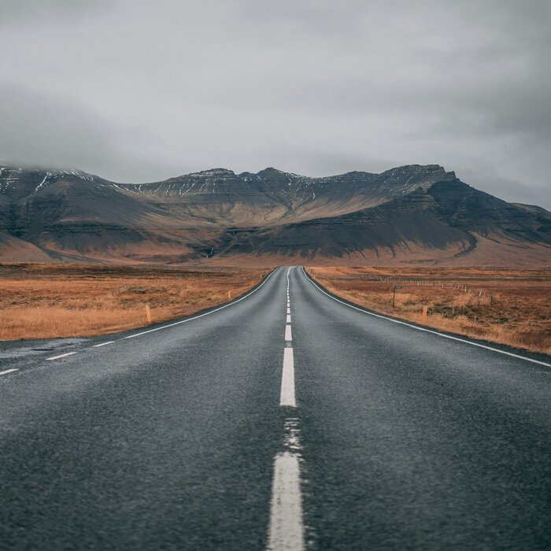
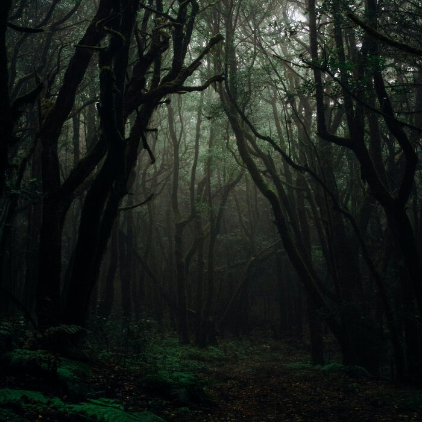
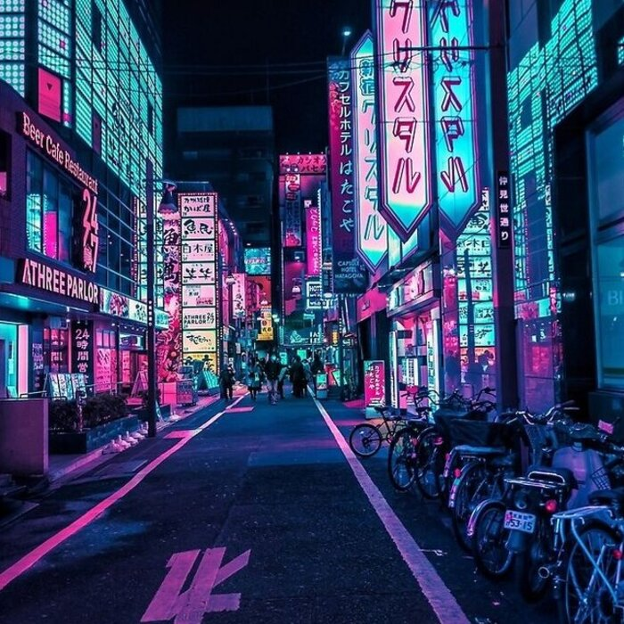
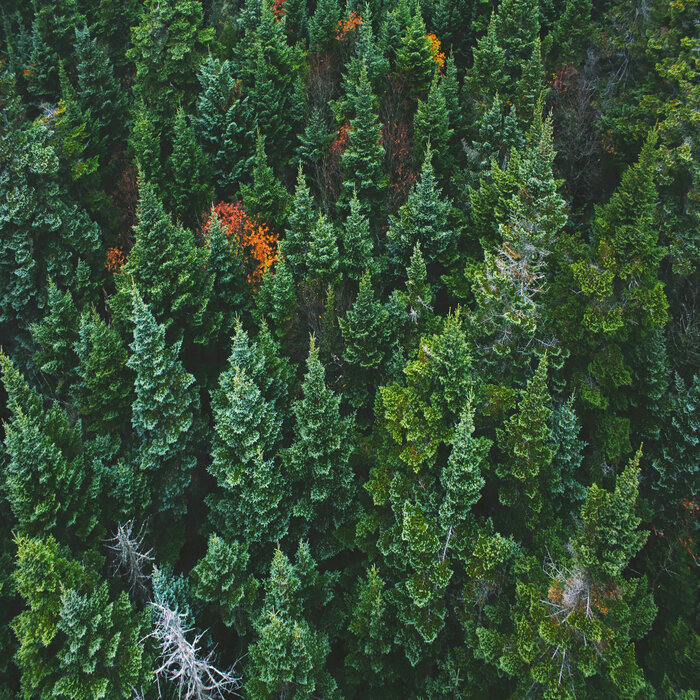

Фритрек и нулевой спринт: Подготовка к работе
</HTML>
Это было самое начало пути. На этом этапе важно было проникнуться основами и настроиться на учёбу. И, возможно, подумать, как новые знания могут повлиять на ваше будущее.
До этого момента я почти ничего не знал о программировании, а уж о фронтенд-разработке и подавно. Тем не менее, перед началом обучения меня переполняли энтузиазм и готовность вступить на этот долгий путь к новым знаниям.
1 спринт: Я — чистый лист
</HTML>
На первых этапах мы работали со страхами и сомнениями, которые часто испытывают новички. Один из них — страх перед чистым листом. Это, конечно же, намного сложнее, чем боязнь куска бумаги. Часто за этим ощущением скрываются более глубокие вопросы: с чего начать? а вдруг будет слишком сложно? что, если я не справлюсь?
Перед началом первого спринта у меня было лишь общее представление о том, что предстоит изучать на курсе, но я ничего не знал о проектах, и вся моя практика ограничивалась упражнениями в тренажёре. Это вызывало лёгкую неуверенность и некоторую настороженность
1 спринт: А если не получится?
<CSS>
Первый проект — позади! Но это всё ещё самое начало пути. Радость могла быстро померкнуть и смениться ожиданием провала. Или вы, наоборот, могли вдохновиться успехами и поверить в себя.
После окончания первого спринта я разобрался, как устроено обучение, что ждёт после теории и как правильно сдавать проекты. Естественно, меня переполняла гордость за успешно сданный проект.
2 спринт: Погоня за идеалом
<desigions>
На этом этапе вы уже достаточно разбирались в основах вёрстки, чтобы понять, как много ещё впереди. Вы могли попытаться погнаться за идеалом и понять, что он недостижим. А, может, вы вовсе и не подвержены перфекционизму и вместо того, чтобы сделать идеально, старались просто сделать.
Первый спринт сильно повысил мой интерес к программированию. Начиная второй спринт, я чувствовал предвкушение от новых знаний и уверенность в том, что справлюсь с любыми задачами.
2 спринт: О тех, кто рядом
care
Всё это время вы были не одиноки (хотя, возможно, иногда и чувствовали, что одни против целого мира). Вас окружали одногруппники, команда сопровождения и просто близкие люди, которым можно пожаловаться, если очередной макет просто так не поддавался. Осваивать что-то новое легче, когда рядом есть единомышленники, не правда ли?
Второй спринт оказался намного сложнее первого. Было гораздо меньше подсказок и поблажек, но я даже не мог представить, что ждало меня в третьем спринте...
3 спринт: Обходные стратегии
<support>
.jpg)
На этом курсе вы постоянно решали разные задачи. В какой-то момент вам могло показаться, что решения просто иссякли. Значит, пришло время посмотреть на задачу под другим углом.
В теоретической части было очень много сложных тем, у меня было чувство, что я ничего не понимаю. Когда я начал делать проект 3 спринта, я был окончательно растерян.
3 спринт: Когда опускаются руки
<lifes-style: none;>
.jpg)
Во время учёбы часто возникает чувство, когда не знаешь, за что хвататься. Вроде и проектную пора сдавать, и задачи хочется порешать, и в теории получше разобраться, и жизнь не забыть пожить. В такие моменты очень нужна концентрация. Вспомните, откуда вы её черпали.
На протяжении этого спринта очень часто приходилось пересиливать себя, и соответственно, вся концентрация шла изнутри. Завершение этого спринта было долгожданной победой над невыносимо сложным проектом. Но я чувствую, что обрел много знаний, и стал гораздно увернее в своих силах.
«Сейчас я здесь»
<experience>
Сейчас вы уже очень много знаете о вёрстке. Но это только начало. Во-первых, впереди ещё много материала про «красотищу». Во-вторых, с окончанием курса учёба не заканчивается. Вёрстка — это целый мир. И этот мир постоянно меняется. Познать его полностью не получится, но это тот случай, когда важен сам процесс познания. Ведь часто путь — и есть результат.
Я чувствую, что у меня наконец что-то получается. Дальше, я надеюсь, обучение будет идти гораздо легче, теперь, когда я имею представление о том, как все работает и связано друг с другом (покрайней мере CSS и HTML).